Dataset E Copertura
Il dataset combina annunci storici raccolti tramite Wayback e annunci live Moto.it. L'analisi lavora sul dataset corrente pulito e tratta tutte le osservazioni nello stesso modo.
Raw listings
1.930
righe nel CSV di input
Clean listings
1.891
righe usabili dopo pulizia
Weekly observations
312
serie settimanale
Monthly observations
72
serie mensile principale
Cosa rappresenta una riga?
Una riga rappresenta un annuncio del mercato raccolto. Le variabili principali sono data annuncio, brand, modello, anno, km, cilindrata, prezzo, localizzazione e tipo di venditore.
Target
`median_price` mensile, cioè la mediana dei prezzi osservati nel mese.
Perché mediana?
Riduce l'impatto degli outlier e delle moto molto costose.
Uso
Descrivere il mercato e fare forecasting dell'andamento nel tempo.
Selezione Tramite Mediane
Per fare qualcosa di sensato non mischiamo tutti i tipi di moto. Il mercato completo resta come contesto, ma il segmento principale ? quello delle enduro moderne racing 250-500cc.
| Segmento | Annunci | Mesi | Mesi >= 10 | Mediana delle mediane | Range |
|---|---|---|---|---|---|
| Core moderno 250-500cc Segmento principale | 894 | 62 | 29 | 6.800 EUR | 2020-07 -> 2026-05 |
| Mercato completo | 1.891 | 72 | 67 | 6.225 EUR | 2020-06 -> 2026-05 |
| Maxi enduro 690/701 | 211 | 34 | 12 | 7.412,5 EUR | 2020-06 -> 2026-05 |
| Vintage / epoca | 587 | 52 | 13 | 3.400 EUR | 2020-06 -> 2026-05 |
Regola del segmento core
dataset completo
market_segment = modern
250cc <= engine_cc <= 500cc
1000 <= price <= 20000Questa scelta evita di mischiare moto racing moderne, maxi enduro e moto d'epoca, che hanno motivazioni di prezzo diverse.
Mesi recenti del segmento core
Nel 2026 il segmento core mostra valori intorno a 6.000-6.500 EUR, con maggio coperto da molti annunci.
Ordine Nei Dati: Età E Chilometri
Per rendere le previsioni più veritiere e i consigli di acquisto più utili, il segmento core viene ulteriormente diviso per fasce di anzianità e chilometraggio. Questo aiuta a distinguere moto quasi nuove, recenti e più datate.
Cluster forti
8
almeno 20 annunci
Cluster deboli
4
da rafforzare prima di forecast dedicati
Cluster vuoti
8
combinazioni rare o poco realistiche
| Età / Km | 0-5k | 5-10k | 10-15k | 15k+ |
|---|---|---|---|---|
| 0-2 anni | 8.550 EUR n=92 | 7.500 EUR n=1 | n.d. | n.d. |
| 3-5 anni | 7.200 EUR n=274 | 6.175 EUR n=20 | n.d. | n.d. |
| 6-10 anni | 6.200 EUR n=267 | 5.900 EUR n=43 | 5.800 EUR n=3 | 4.800 EUR n=20 |
| 11-20 anni | 4.100 EUR n=53 | 4.400 EUR n=20 | 4.300 EUR n=17 | 5.600 EUR n=12 |
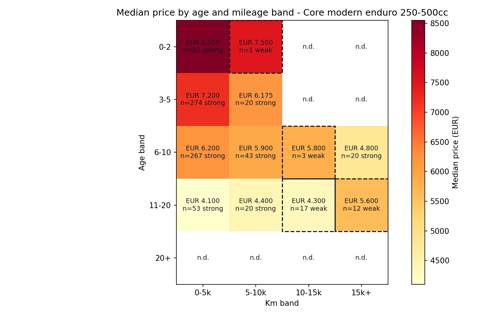
Consigli pratici di acquisto
Dopo il rafforzamento mirato, i cluster forti passano da 5 a 8. Restano pochi cluster deboli, ma non tutti sono realistici o utili per il forecasting.
Forecast Per Cluster Età/Km
Il forecasting per cluster è più credibile del forecast generale perché confronta moto più simili. Usiamo il forecast solo sui cluster con almeno 20 mesi osservati, così evitiamo serie troppo corte.
| Cluster | Best model | RMSE | MAPE | Ultima mediana | Buying score | Consiglio |
|---|---|---|---|---|---|---|
| 11-20 anni / 0-5k | Random Forest | 91,91 | 1,83% | 4.100 EUR | -25 EUR | Neutro |
| 6-10 anni / 0-5k | Random Forest | 572,37 | 8,88% | 5.600 EUR | +400 EUR | Leggermente conveniente |
| 3-5 anni / 0-5k | Seasonal naive | 741,96 | 8,21% | 6.200 EUR | +900 EUR | Buona finestra |
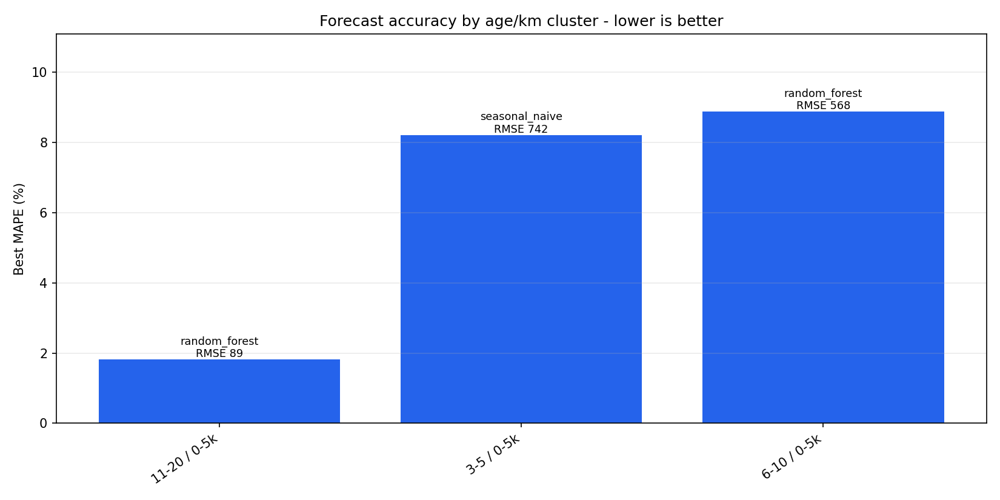
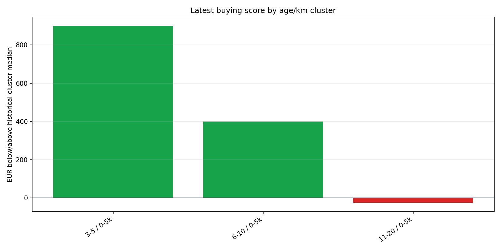
Buy Futuro: Giugno-Dicembre 2026
Questa sezione usa i modelli migliori dei cluster età/km per stimare finestre future di acquisto. Il buying score confronta il prezzo previsto con la mediana storica dello stesso cluster: se è positivo, il mese stimato è più conveniente del normale per quel tipo di moto.
| Periodo | Cluster | Prezzo previsto | Mediana storica cluster | Buying score | Modello | Valutazione |
|---|---|---|---|---|---|---|
| 2026-09 | 3-5 anni / 0-5k | 6.200 EUR | 7.100 EUR | +900 EUR | Seasonal naive | Strong buy |
| 2026-06 | 3-5 anni / 0-5k | 6.800 EUR | 7.100 EUR | +300 EUR | Seasonal naive | Good buy |
| 2026-07 | 3-5 anni / 0-5k | 6.800 EUR | 7.100 EUR | +300 EUR | Seasonal naive | Good buy |
| 2026-10 | 3-5 anni / 0-5k | 6.800 EUR | 7.100 EUR | +300 EUR | Seasonal naive | Good buy |
| 2026-11 | 3-5 anni / 0-5k | 6.800 EUR | 7.100 EUR | +300 EUR | Seasonal naive | Good buy |
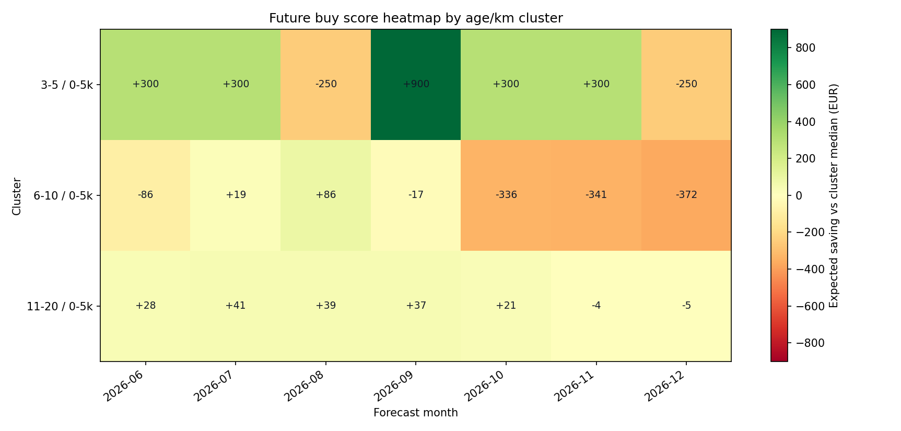
Come leggerlo
Non significa che tutto il mercato sarà economico a settembre 2026. Significa che, secondo il modello del cluster, le enduro moderne 250-500cc con 3-5 anni e 0-5k km potrebbero stare sotto la loro mediana storica.
Questa è la parte più operativa del progetto: non solo prevedere un prezzo, ma trasformare la previsione in una decisione di acquisto.
Risultati Forecasting
Sono stati confrontati baseline stagionale, Holt-Winters, Random Forest e MLP. Il target ? il prezzo mediano mensile.
| Modello | MAE | RMSE | MAPE | R2 | Lettura |
|---|---|---|---|---|---|
| Random Forest Best | 1.402,22 | 1.762,12 | 22,00% | 0,226 | Miglior compromesso tra errore e capacità predittiva. |
| Holt-Winters | 1.713,03 | 2.123,34 | 31,83% | -0,124 | Modello statistico utile come confronto. |
| Seasonal naive | 2.311,07 | 2.725,96 | 39,74% | -0,853 | Baseline semplice, superata dai modelli. |
| MLP | 3.135,73 | 3.916,69 | 52,97% | -2,825 | Non competitivo su questa serie. |
Interpretàzione del risultato
Il Random Forest ? il modello migliore: riesce a sfruttare lag e variabili temporali meglio dei metodi puramente statistici. L'errore rimane comunque significativo perché il mercato ? rumoroso: modelli, anni, km e tipologie di moto variano molto.
Periodi Potenzialmente Convenienti
La raccomandazione confronta il prezzo previsto dal modello migliore con la mediana generale. Un valore positivo indica un periodo potenzialmente più conveniente.
| Periodo | Prezzo reale | Prezzo previsto | Risparmio stimato | Consiglio |
|---|---|---|---|---|
| 2026-05 | 5.200 | 5.681 | 1.519 | Sì |
| 2025-07 | 4.000 | 5.686 | 1.514 | Sì |
| 2026-04 | 5.400 | 5.843 | 1.357 | Sì |
| 2025-10 | 8.425 | 6.079 | 1.121 | Sì |
| 2025-08 | 6.000 | 6.177 | 1.023 | Sì |
Grafici Generati
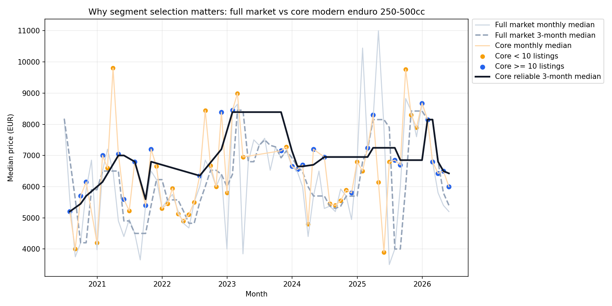
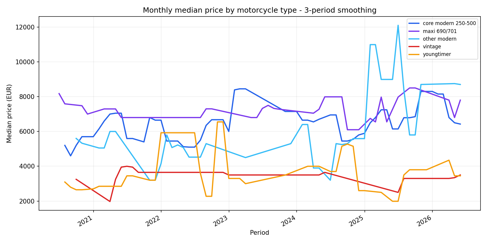
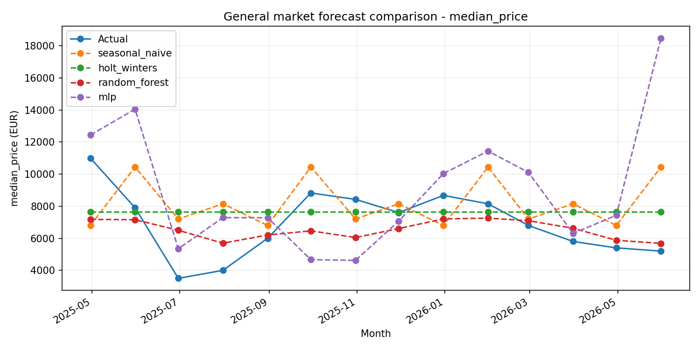
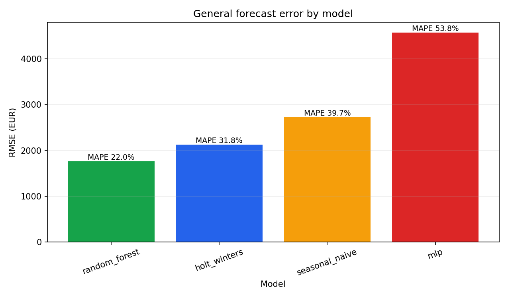
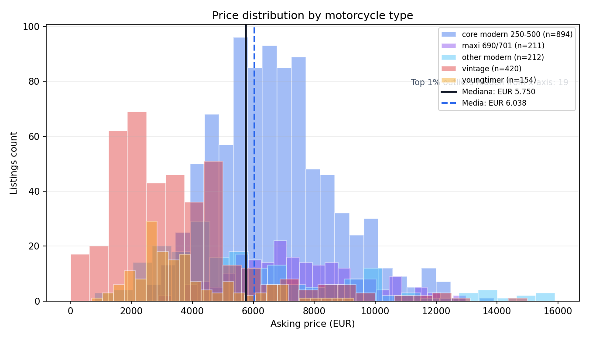
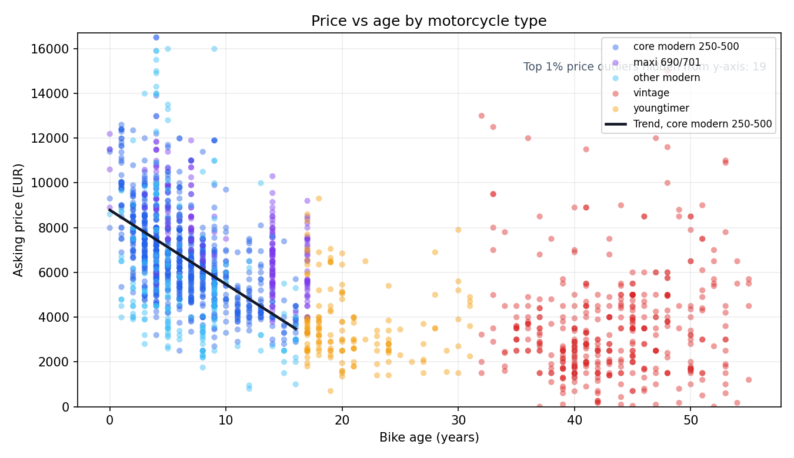
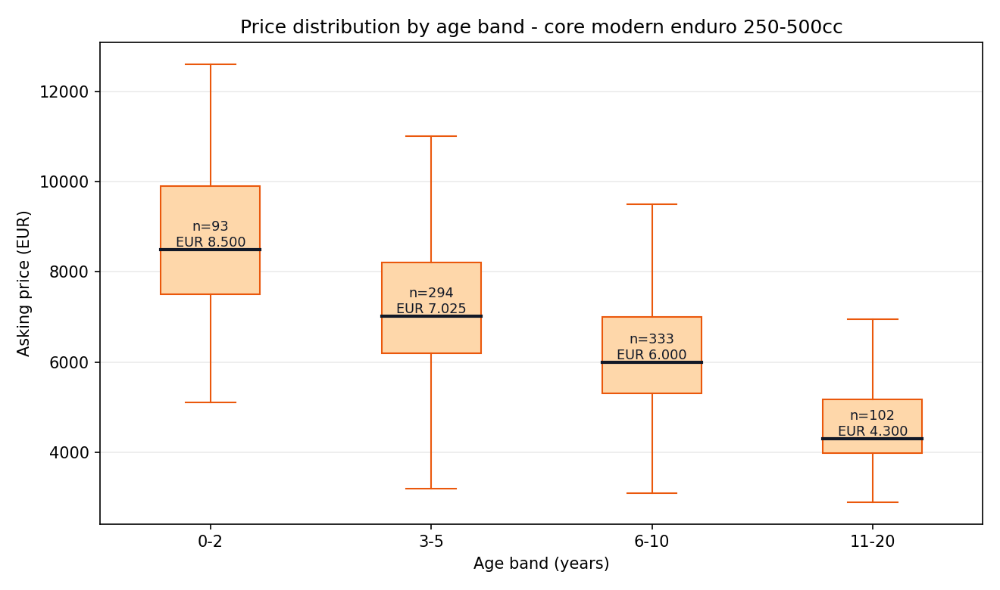
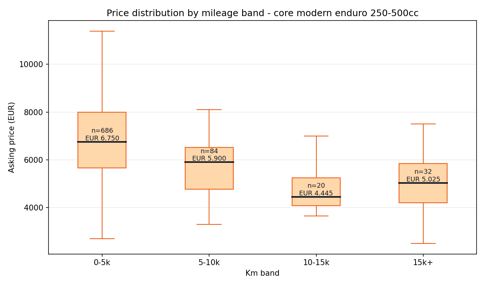
Cosa Raccontano I Dati
1. Il mercato va segmentato
Il mercato completo ? utile come panoramica, ma mischia moto moderne, maxi enduro e vintage. La scelta core 250-500cc rende l'analisi più coerente.
2. La mediana ? la metrica giusta
Gli annunci hanno outlier e distribuzioni sbilanciate. La mediana descrive meglio il prezzo tipico rispetto alla media.
3. Il Random Forest ? il migliore
Batte baseline, Holt-Winters e MLP sul target mensile generale, con MAPE pari a 22,00%. Nei cluster età/km più coperti l'errore scende ulteriormente.
Frase pronta per la presentazione
Abbiamo costruito una serie temporale del mercato enduro usando annunci aggregati per mese. Per evitare una lettura troppo rumorosa, abbiamo selezionato un sotto-mercato più coerente: enduro moderne 250-500cc. Su questo segmento analizziamo mediane mensili e poi organizziamo i prezzi per fasce di età e chilometraggio. Il forecasting generale resta come benchmark, mentre i risultati più utili arrivano dai cluster età/km: su alcuni cluster il MAPE scende sotto il 10%.